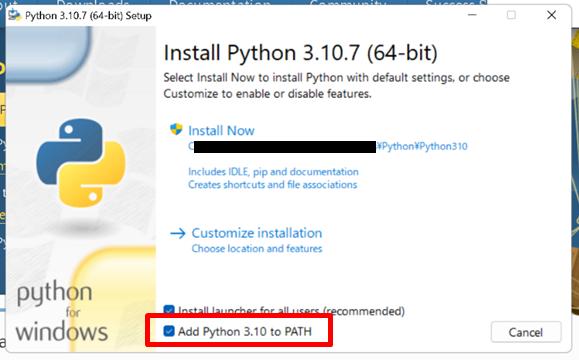
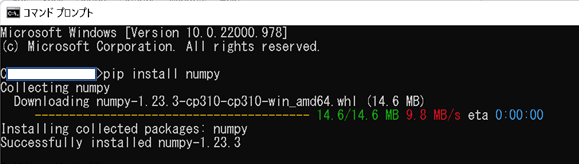

1. Pythonをパソコンにインストールする。最新版なら多分大丈夫。インストール時、「Add Python 3.10 to PATH」に必ずチェックを入れてください！！
2. IDLEを開く。Windowsなら画面左下のWindowsをクリックしてPythonかIDLEかで検索。デスクトップかツールバーにもってきとくといい
3. 白い正方形の画面が出てくる。Shellというらしい。>>>のところに「print("3+5=" + str(3+5))」と打ってみよう。「3+5=8」と出てくるはず。
4. File --> Open... で出てくる画面にフォルダを作る。名前は適当
5.フォルダ内に下の9ファイルを作る。打つの面倒なのでコピペをうまく使ってください：
ConstellationList.txt
ConstellationPositionNew.txt
ExtraPlanet.txt
Lines_light.txt
StarsNew-Tycho-to10.txt
StarsNewHIP_to6_5.txt
TychoSearchHelper.txt
boundary_light.txt
supplement_1-3_light.txt
6.下のURLすべてにアクセスする。txtファイルは上で作ったファイルに中身をコピーする。行数が30万を超えるものもあるのでドラッグではなく「すべて選択」で。
StarsShow.pyはたぶん勝手にダウンロードされるので、上のフォルダ内に移す。
ConstellationList.txt
ConstellationPositionNew.txt
ExtraPlanet.txt
Lines_light.txt
StarsNew-Tycho-to10.txt
StarsNewHIP_to6_5.txt
TychoSearchHelper.txt
boundary_light.txt
supplement_1-3_light.txt
StarsShow.py
7. StarsShow.pyを開く
8. ライブラリをインストールする。たぶんここが難関。「Python ライブラリ インストール」とか調べてみるとやり方が分かると思う（以下でWindowsの場合を書く）。
プログラム冒頭でmatplotlib、numpy、tkinter、math、datetime、time、linecache、requests、jsonとたくさんのライブラリをインポートしているうち、どれがインストールしないとだめでどれがしなくて使えるか忘れてしまった、ごめんなさい
少なくともmatplotlib、numpy、tkinterは必要
Windowsの場合:
(1) Windowsキーを押す
(2) 検索窓で「cmd」と検索
(3) コマンドプロンプトが開く
(4) 「pip install matplotlib」と入力、Enter

(5) 何かいろいろ出てきて勝手に終わる。エラーが出たとき（例えば「No such file or directory」）は1.でチェックを忘れていた可能性があります。面倒だけどPythonの再インストールをおすすめします
(6) 最後にsuccessfully installedか何か書いてれば成功。
(7) ありませんみたいなのでるとスペルミスかインストール不要かのどちらかかな多分
(8) matplotlibの部分をtkinterやnumpyに替えてほかもインストールする
9. StarsShow.pyに戻り、上のRun --> Run Module で実行する。WindowsならF5でもできる。インストールしていないライブラリがあるとShellにmatplotlib is not foundのようなエラーが出るので、怖がらずにコマンドプロンプトでインストールする。
10. エラーなくうまくいけば準備は終わり。よい天文ライフを。
StarsShow.pyの1131行目の「36」と1143行目の「140」は自宅の緯度経度に書きかえることをおすすめします。
紹介文に戻る